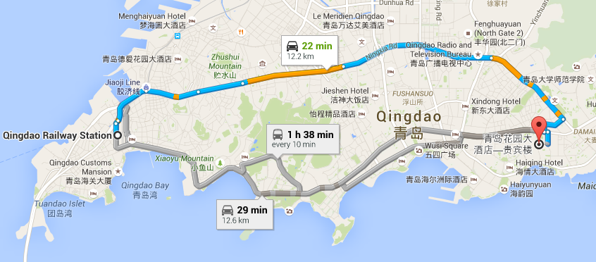
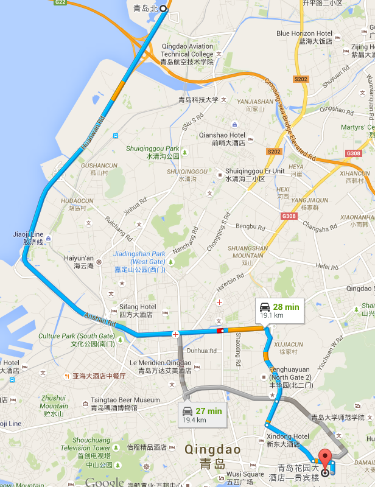
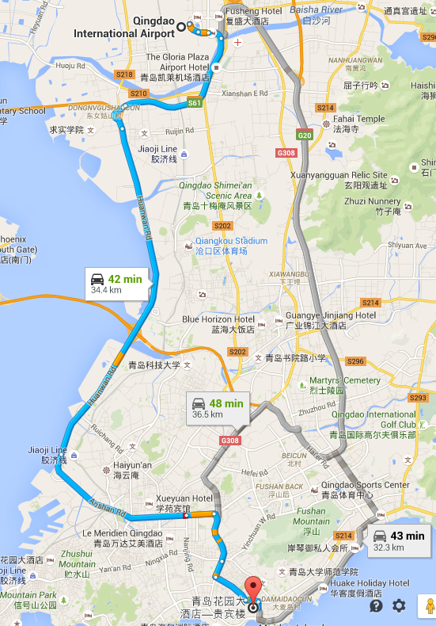

Qingdao Garden Hotel is 13km from Qingdao Railway Station,

19km from Qingdao North Railway Station

and 33km from the Qingdao Airport.

It is always wise to take a taxi to the hotel, which costs around 30RMB from the railway station, 43RMB from the north railway station and 70RMB from the airport.